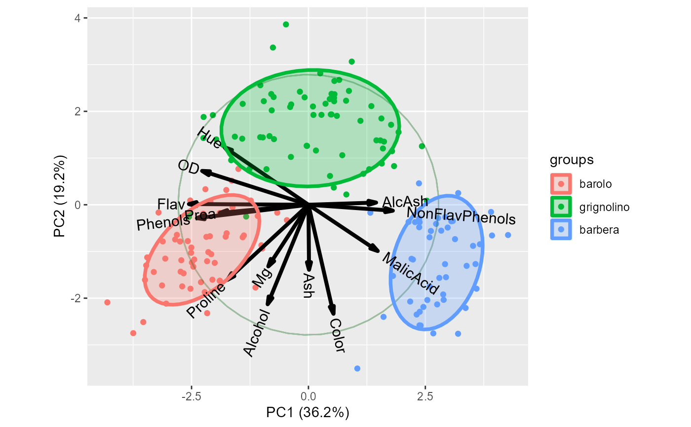
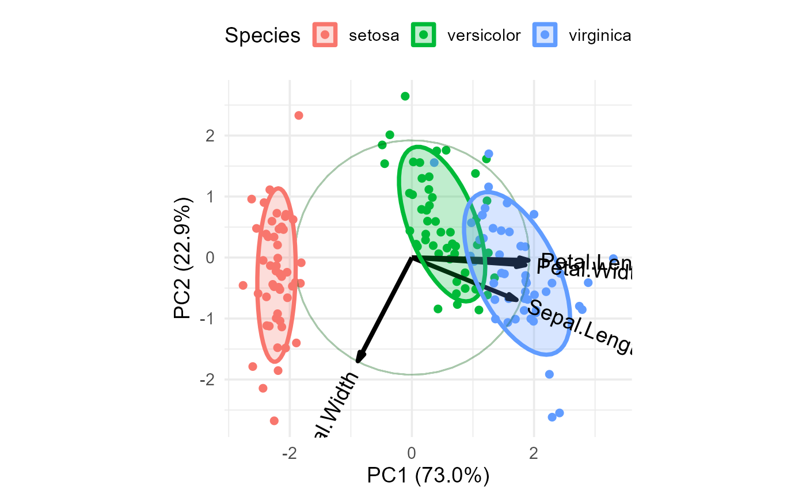

A biplot simultaneously displays information on the observations (as points) and the variables (as vectors) in a multidimensional dataset. The 2D biplot is typically based on the first two principal components of a dataset, giving a rank 2 approximation to the data. The “bi” in biplot refers to the fact that two sets of points (i.e., the rows and columns of the data matrix) are visualized by scalar products, not the fact that the display is usually two-dimensional.
The biplot method for principal component analysis was originally defined by Gabriel (1971, 1981). Gower & Hand (1996) give a more complete treatment. Greenacre (2010) is a practical user-oriented guide to biplots. Gower et al. (2011) is the most up to date exposition of biplot methodology.
Usage
ggbiplot(
pcobj,
choices = 1:2,
scale = 1,
pc.biplot = TRUE,
obs.scale = 1 - scale,
var.scale = scale,
var.factor = 1,
groups = NULL,
point.size = 1.5,
ellipse = FALSE,
ellipse.prob = 0.68,
ellipse.linewidth = 1.3,
ellipse.fill = TRUE,
ellipse.alpha = 0.25,
labels = NULL,
labels.size = 3,
alpha = 1,
var.axes = TRUE,
circle = FALSE,
circle.prob = 0.68,
varname.size = 3,
varname.adjust = 1.25,
varname.color = "black",
varname.abbrev = FALSE,
...
)Arguments
- pcobj
- choices
Which components to plot? A vector of length 2.
- scale
Covariance biplot (
scale = 1), form biplot (scale = 0). Whenscale = 1(the default), the inner product between the variables approximates the covariance and the distance between the points approximates the Mahalanobis distance.- pc.biplot
Logical, for compatibility with
biplot.princomp(). IfTRUE, use what Gabriel (1971) refers to as a "principal component biplot", with \(\alpha = 1\) and observations scaled up by sqrt(n) and variables scaled down by sqrt(n). Then inner products between variables approximate covariances and distances between observations approximate Mahalanobis distance.- obs.scale
Scale factor to apply to observations
- var.scale
Scale factor to apply to variables
- var.factor
Factor to be applied to variable vectors after scaling. This allows the variable vectors to be reflected (
var.factor = -1) or expanded in length (var.factor > 1) for greater visibility.reflectprovides a simpler way to reflect the variables.- groups
Optional factor variable indicating the groups that the observations belong to. If provided the points will be colored according to groups and this allows data ellipses also to be drawn when
ellipse = TRUE.- point.size
Size of observation points.
- ellipse
Logical; draw a normal data ellipse for each group?
- ellipse.prob
Coverage size of the data ellipse in Normal probability
- ellipse.linewidth
Thickness of the line outlining the ellipses
- ellipse.fill
Logical; should the ellipses be filled?
- ellipse.alpha
Transparency value (0 - 1) for filled ellipses
- labels
Optional vector of labels for the observations. Often, this will be specified as the
row.names()of the dataset.- labels.size
Size of the text used for the point labels
- alpha
Alpha transparency value for the points (0 = transparent, 1 = opaque)
- var.axes
logical; draw arrows for the variables?
- circle
draw a correlation circle? (only applies when prcomp was called with
scale = TRUEand whenvar.scale = 1)- circle.prob
Size of the correlation circle
- varname.size
Size of the text for variable names
- varname.adjust
Adjustment factor the placement of the variable names, >= 1 means farther from the arrow
- varname.color
Color for the variable vectors and names
- varname.abbrev
logical; whether or not to abbreviate the variable names, using
abbreviate.- ...
other arguments passed down
Details
The biplot is constructed by using the singular value decomposition (SVD) to obtain a low-rank approximation to the data matrix \(\mathbf{X}_{n \times p}\) (centered, and optionally scaled to unit variances) whose \(n\) rows are the observations and whose \(p\) columns are the variables.
Using the SVD, the matrix \(\mathbf{X}\), of rank \(r \le p\) can be expressed exactly as $$\mathbf{X} = \mathbf{U} \mathbf{\Lambda} \mathbf{V}' = \Sigma_i^r \lambda_i \mathbf{u}_i \mathbf{v}_i' \; ,$$
where
\(\mathbf{U}\) is an \(n \times r\) orthonormal matrix of observation scores; these are also the eigenvectors of \(\mathbf{X} \mathbf{X}'\),
\(\mathbf{\Lambda}\) is an \(r \times r\) diagonal matrix of singular values, \(\lambda_1 \ge \lambda_2 \ge \cdots \lambda_r\)
\(\mathbf{V}\) is an \(r \times p\) orthonormal matrix of variable weights and also the eigenvectors of \(\mathbf{X}' \mathbf{X}\).
Then, a rank 2 (or 3) PCA approximation \(\widehat{\mathbf{X}}\) to the data matrix used in the biplot can be obtained from the first 2 (or 3) singular values \(\lambda_i\) and the corresponding \(\mathbf{u}_i, \mathbf{v}_i\) as
$$\mathbf{X} \approx \widehat{\mathbf{X}} = \lambda_1 \mathbf{u}_1 \mathbf{v}_1' + \lambda_2 \mathbf{u}_2 \mathbf{v}_2' \; .$$
The variance of \(\mathbf{X}\) accounted for by each term is \(\lambda_i^2\).
The biplot is then obtained by overlaying two scatterplots that share a common set of axes and have a between-set scalar product interpretation. Typically, the observations (rows of \(\mathbf{X}\)) are represented as points and the variables (columns of \(\mathbf{X}\)) are represented as vectors from the origin.
The scale factor, \(\alpha\) allows the variances of the components to be apportioned between the
row points and column vectors, with different interpretations, by representing the approximation
\(\widehat{\mathbf{X}}\) as the product of two matrices,
$$\widehat{\mathbf{X}} = (\mathbf{U} \mathbf{\Lambda}^\alpha) (\mathbf{\Lambda}^{1-\alpha} \mathbf{V}')$$
The choice \(\alpha = 1\), assigning the singular values totally to the left factor, gives a distance interpretation to the row display and \(\alpha = 0\) gives a distance interpretation to the column display. \(\alpha = 1/2\) gives a symmetrically scaled biplot.
When the singular values are assigned totally to the left or to the right factor, the resultant coordinates are called principal coordinates and the sum of squared coordinates on each dimension equal the corresponding singular value. The other matrix, to which no part of the singular values is assigned, contains the so-called standard coordinates and have sum of squared values equal to 1.0.
References
Gabriel, K. R. (1971). The biplot graphical display of matrices with application to principal component analysis. Biometrika, 58, 453–467. doi:10.2307/2334381 .
Gabriel, K. R. (1981). Biplot display of multivariate matrices for inspection of data and diagnosis. In V. Barnett (Ed.), Interpreting Multivariate Data. London: Wiley.
Greenacre, M. (2010). Biplots in Practice. BBVA Foundation, Bilbao, Spain. Available for free at https://www.fbbva.es/microsite/multivariate-statistics/.
J.C. Gower and D. J. Hand (1996). Biplots. Chapman & Hall.
Gower, J. C., Lubbe, S. G., & Roux, N. J. L. (2011). Understanding Biplots. Wiley.
See also
reflect, ggscreeplot;
biplot for the original stats package version;
fviz_pca_biplot for the factoextra package version.
Examples
data(wine)
library(ggplot2)
wine.pca <- prcomp(wine, scale. = TRUE)
ggbiplot(wine.pca,
obs.scale = 1, var.scale = 1,
varname.size = 4,
groups = wine.class,
ellipse = TRUE, circle = TRUE)

data(iris)
iris.pca <- prcomp (~ Sepal.Length + Sepal.Width + Petal.Length + Petal.Width,
data=iris,
scale. = TRUE)
ggbiplot(iris.pca, obs.scale = 1, var.scale = 1,
groups = iris$Species, point.size=2,
varname.size = 5,
varname.color = "black",
varname.adjust = 1.2,
ellipse = TRUE,
circle = TRUE) +
labs(fill = "Species", color = "Species") +
theme_minimal(base_size = 14) +
theme(legend.direction = 'horizontal', legend.position = 'top')
